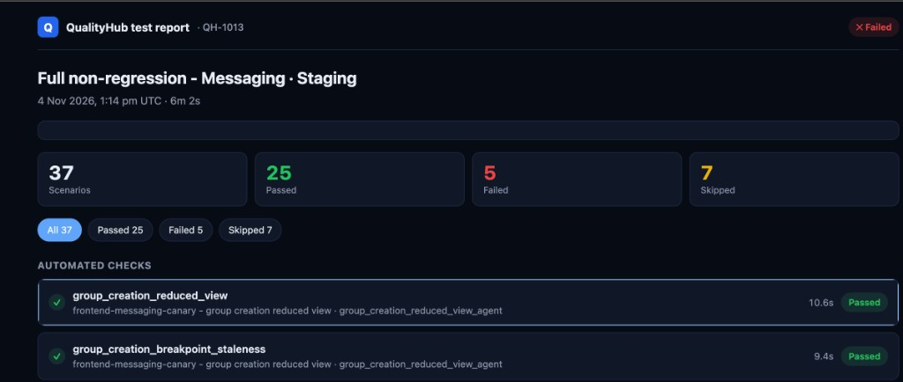

Before
- Canary tests existed, but starting a targeted staging run was a specialist task.
- Progress lived in GitLab job logs.
- A ticket or MR still needed a person to turn requirements into a plan, then into tests, then into a verdict.
First FDE project · Flagship
Not a prompt experiment. QualityHub connects Slack, Jira, GitLab, LLMs and Playwright into a workflow engineers can actually use — the kind of systems, architecture and delivery work Forward Deployed Engineers do.

Connecting multiple systems, designing the workflow, making the architectural decisions and shipping something the team can run from Slack.
Staging validation lived in terminals, CI config and specialist knowledge. Product, support and engineers who needed a run had to wait for someone who could start one. Ticket work still needed a senior QA to read Jira, read the MR, plan coverage and chase evidence.
QualityHub sits between how people work (Slack, Jira, MRs) and how software is proven (Playwright, GitLab CI, traces, reports). Humans stay in control: who can cancel, what data is missing, what is Failed versus Skipped, and when AI is allowed to spend.
Slack form or qualityhub validate. No terminal. Queue, duplicates and cancel are first-class.
Planner reads the ticket and MR, writes coverage, data limits and priorities. Models are routed per step.
Live progress, pass/fail/skip with reasons, videos and Playwright traces on failures. Failed means failed twice with evidence.
Service, queue and Slack UI in Python. Plan and AI execution in a ticket-CI module. Runs happen in GitLab CI on staging. Reports are job artifacts behind company SSO.
Slack, live progress page /r/QH-id, shareable report.
Python service, GitLab CI, Playwright canary + generated tests, browser agent.
Aircall LLM Gateway. Plan, generate, agent, classify and summarise each get their own model.
Two ways in. The form runs existing canary tests. Validate tests one ticket or MR. Both share the same queue, CI job, live page and report.
Ad-hoc or validate
Pick tests by keyword or feature, or post qualityhub validate <ticket or MR>. Duplicates become a Following card. Only the requester can cancel.
Validate is one flow. Catalog tests cover what already exists. AI rows cover the rest. A passing test goes to its verdict. A test that fails twice goes to the browser agent.
Reads the Jira ticket and MR changes. Writes feature checks, bug repro and edge cases, each with a priority. Missing data skips only that row and asks for the data. Unreachable backend cases are marked covered elsewhere, not forced through the UI.
Writes a Playwright scenario per AI row. 90 seconds, one retry. A broken test is handed to a browser agent. Classify product bug versus test bug. Summarise a verdict for reviewers. Remaining rows skip when the run budget is reached — never marked passed.
Each step uses the cheapest model that can do it. Any step can be switched with an environment variable, no code change. Planner trials: about $0.10–$0.16 per ticket.
| Step | Default | Why |
|---|---|---|
| Plan | Sonnet 5.5 | Coverage, edge cases, data limits |
| Generate tests | Sonnet 5.5 | Playwright that must pass safety checks |
| Browser agent | Sonnet 5.5 | Drive Chrome and judge what it sees |
| Classify failure | Haiku 4.5 | Product bug or test bug |
| Summary | Opus 5.5 | Verdict worded for reviewers |
Cap: $9 per validate run. When it is reached, remaining rows are Skipped: AI budget reached.
Live
Final integration